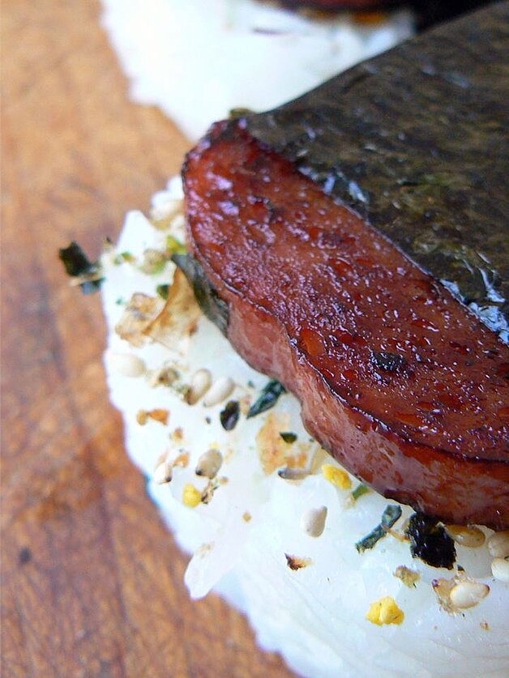

Spam Masubi

Description
Spam Masubi is a Hawaiian reiteration of a type of sushi. The snack contains spam and white rice that is wrapped around seaweed. Many ingredients can be added to this snack which is based on yours or the cook's personal preference.
Ingredients
- 2 cups of uncooked short-grain white rice
- 2 cups of water
- 6 tablespoons of rice vinegar
- 1/4 cup of soy sauce
- 1/4 cup of oyster sauce
- 1/2 cup of white sugar
- 12 ounce container of fully cooked Spam
- 5 sheets of dry seeweed
- 2 tablespoons of vegetable oil
Steps
- Soak uncooked rice for 4 hours;drain and rinse
- In a saucepan, bring 2 cups of water to a boil. Add rice and stir. Reduce heat, cover, and simmer for 20 minutes. Stir in rice vinegar, and set aside to cool.
- In a seprate bowl, stir together soy sauce, oyster sauce, and sugar until sugar is completely dissolved. Slice spam lengthwise into 10 slices, or to desired thickness, and marinate in sauce for 5 minutes.
- In a large skilled, heat oil over medium high heat. Cook slices for 2 minutes per side, or until lightly browned. Cut nori sheets in half and lay on a flat work surface. Place a rice press in the center of the sheet, and press rice tightly inside. Top with a slice of spam, and remove press. Wrap seaweed around rice mold, sealing edges with a small amount of water. (Rice may also be formed by hand in the shape of the meat slices, 9 inch thick.) Musubi may be served warm or chilled.